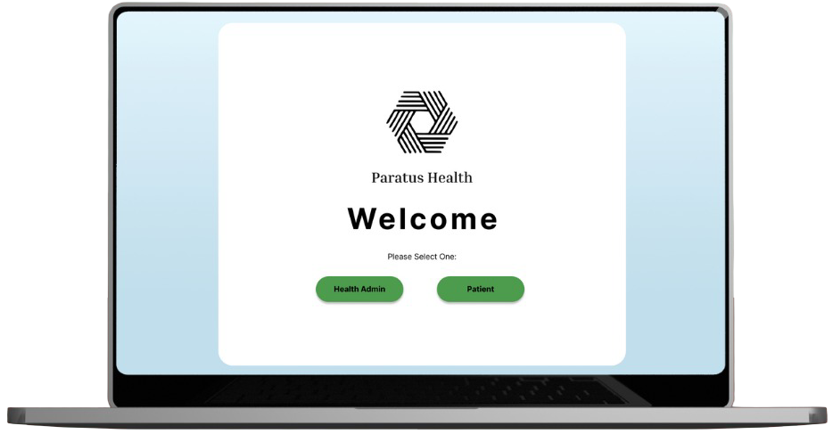
Type
Self Initiated
Role
UX Designer
Tools
Completing the iterative process to design a responsive intake form experience for Paratus Health focusing on accessibility and real-world usability.
Over the course of several weeks, our team followed a full iterative design process to create a multi-page, multi-screen interactive prototype in figma—from initial sketches to a polished, high-fidelity solution for Paratus Health. The goal was to design a new interface from the ground up that solves a real problem for a startup.
Paratus Health is a startup company that is focused on boosting health care clinic efficiency with their AI voice intake nurse that automates pre-appointment patient interviews, saving doctors time and improving clinical accuracy. As they work towards expanding the platform into AI agents for end-to-end care delivery, automating the most costly and repetitive manual labor across the patient journey, we decided to create mock ups for potential user designs that focused on their main mission of efficiency and speed.
First, we created some sketches for potential screens. For each sketch, we tried to keep in line with the patient's need to fill the intake form and the doctor's desire for a streamlined intake process.
Sketch 1
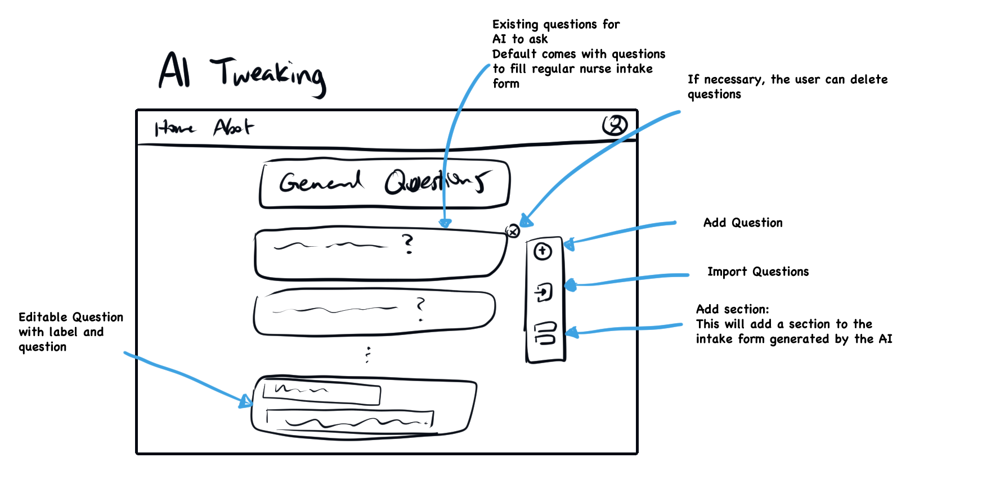
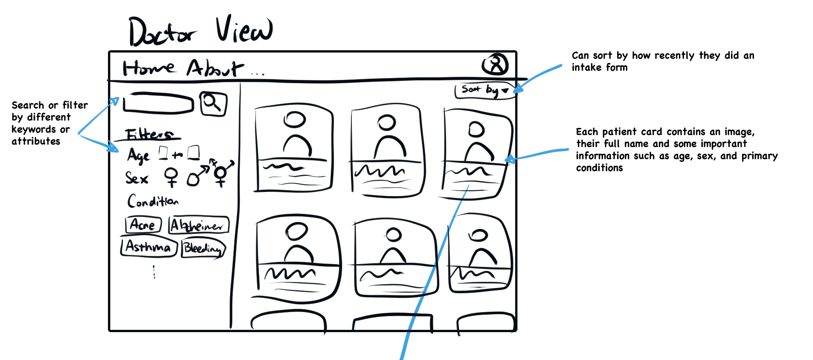
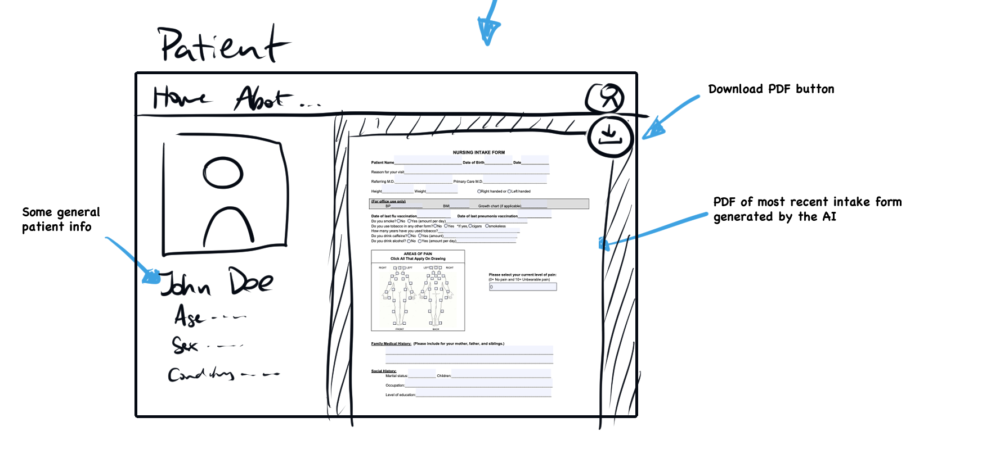
Here, the doctor would be able to edit the prompts given to the AI, allowing them to fine tune exactly what information they want to get from their patient.
This screen allows the doctor to see all of their patients, as well as filter or sort them for efficiency.
This screen would be visible once the doctor clicked on a specific patient card. They would be able to see some relevant patient info on the left, as well as the patient intake form filled out by the AI intake nurse.
In our wireframe, we kept the Doctor View and it remained almost entirely the same. Because of its filtering, it allows for fast lookup and efficiency, which is one of our primary goals. The AI Tweaking screen was kept and itself tweaked, while the Patient View was discarded as it relied on an outdated patient intake pdf form.
Sketch 2
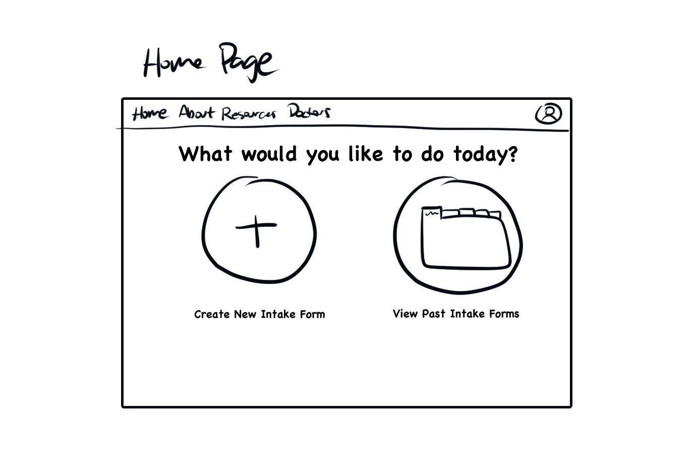
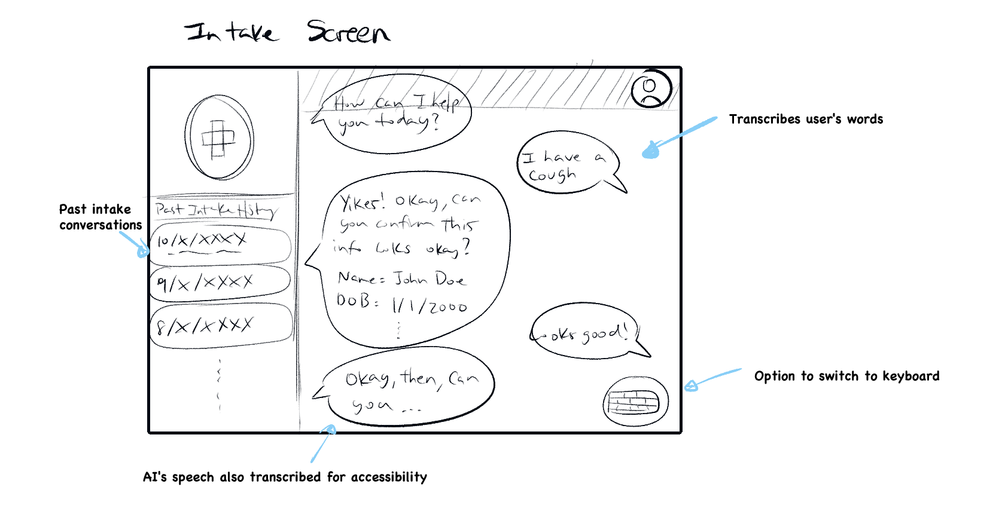
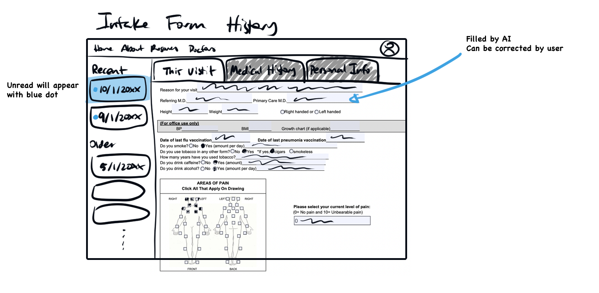
This is the initial screen the patient would see, giving them the option to create a new intake form or see past forms
If the patient chooses to create a new intake form, they will be able to open a new chat with the AI intake nurse. They'll be able to hear the nurse as well as read its transcribed words. The user can then speak back or type a response.
If the patient chooses to see past intake forms, they will be able to see them all starting from the most recent.
In our wireframe, the Home Page and Intake Form History screens were discarded. However, the Intake Screen was kept, particularly the text input feature as it supports accessibility.
Sketch 3
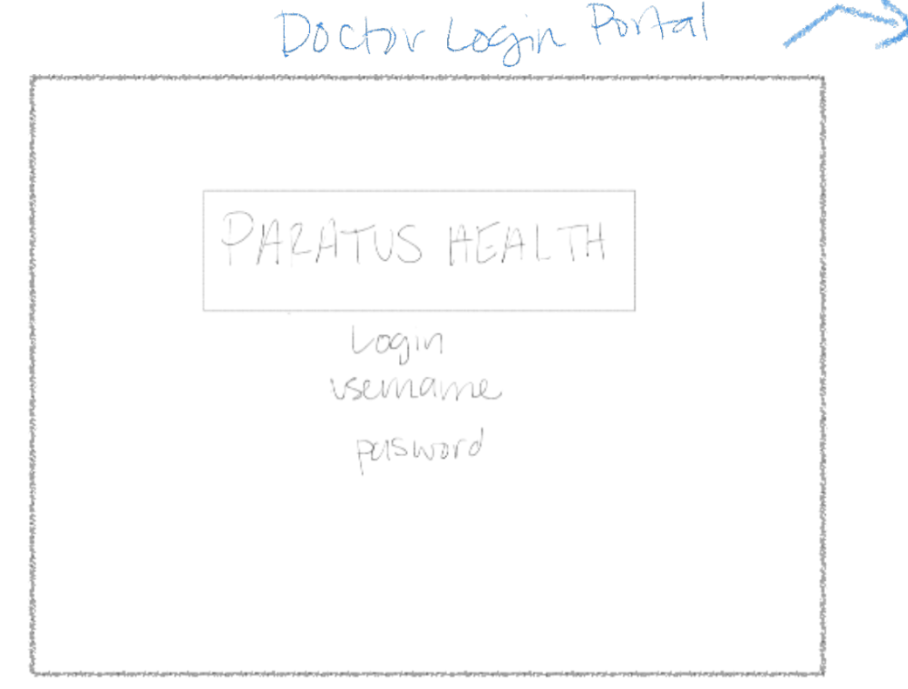
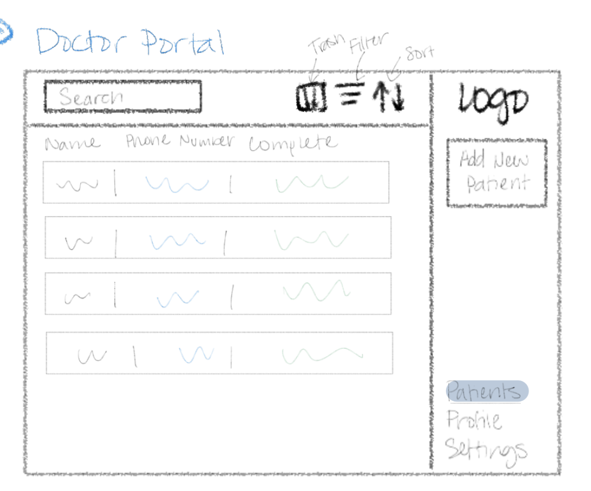
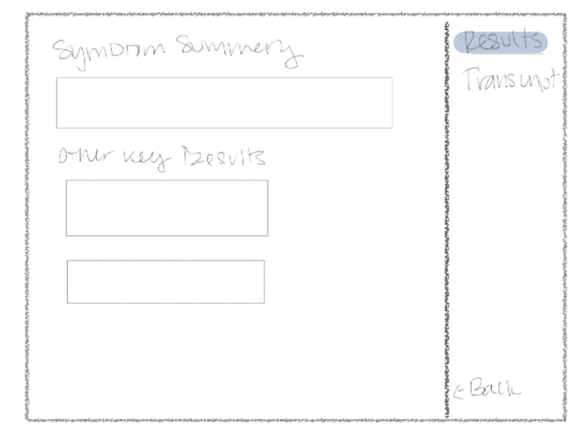
This is the another design of an initial sign-in screen that the doctor would see to ensure their identity.
This would be the default screen the doctor would see once they log in, with a list of their patients.
This screen would allow the doctor to see a patient's information, as well as their intake form.
In this iteration of our wireframe sketch, we took into account the security of the product, and added a sign-in screen to ensure the doctor's identity. In later iterations of the wireframe, we kept the list of patients but changed the view to be a grid view as it is more personable and easier to scan.
Sketch 4
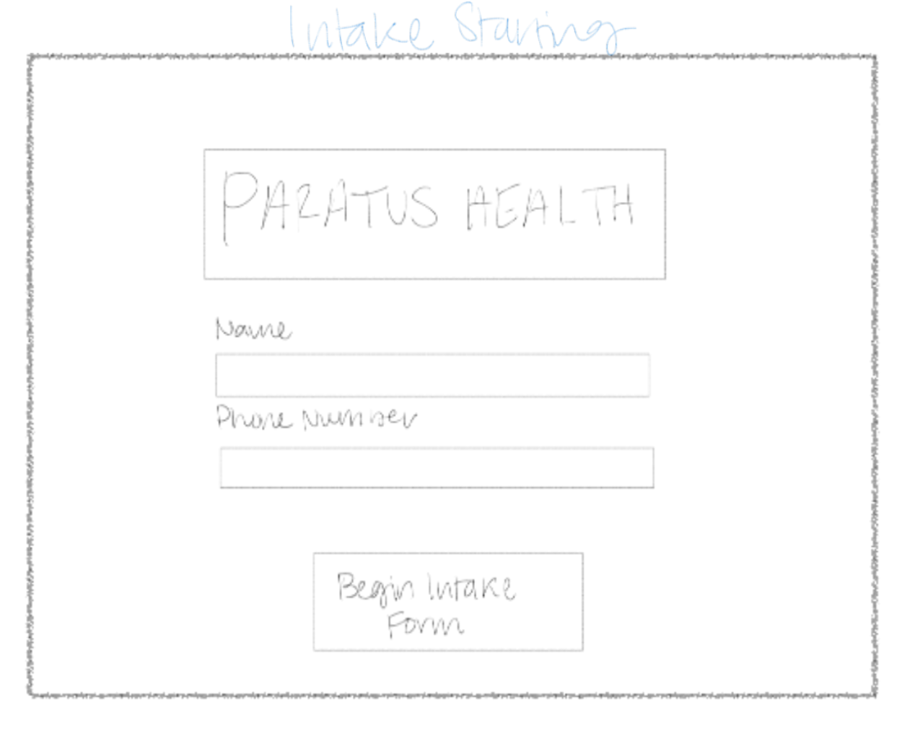
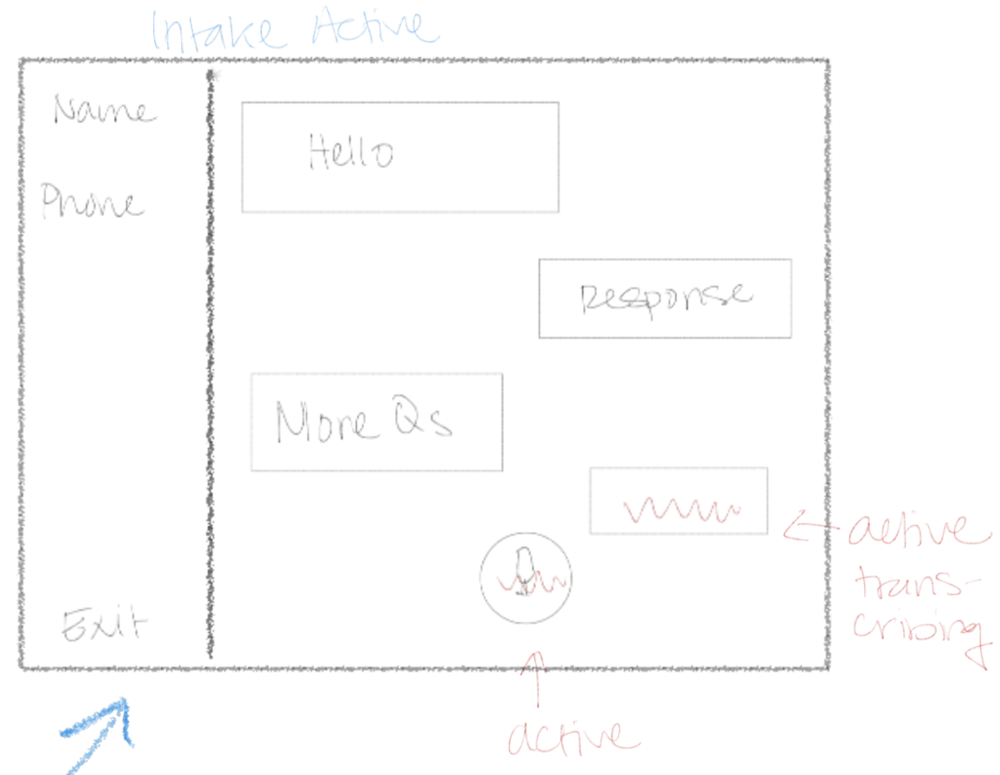
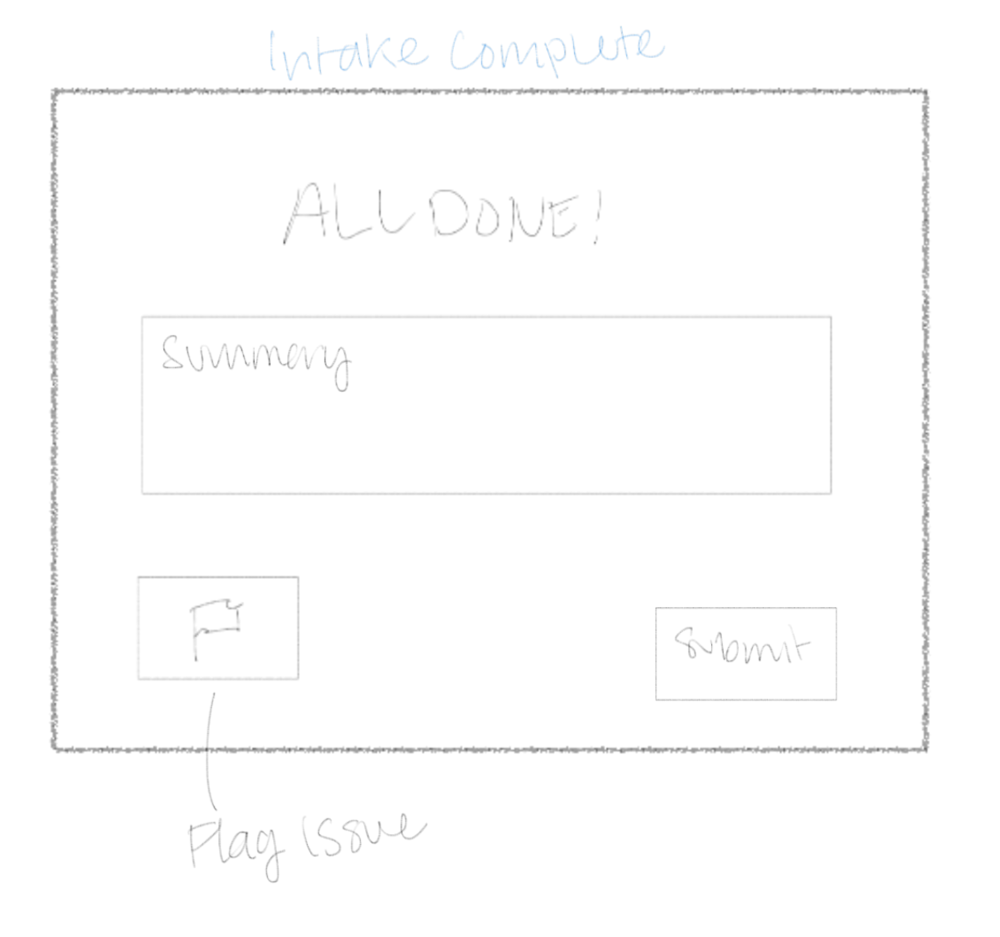
Another design of an initial sign-in screen, this time being a more realistic design with input boxes.
This would be the default screen for a new patient doing the intake form. Taking inspiration from common chatbots, we added a chat interface to simulate a conversation with the AI intake nurse. The main difference is the main action button being a microphone icon, as we wanted to simulate a more natural conversation.
This screen would allow the patient to see the instant results of their intake form, adding the ability to flag any issues they may have as to consolidate any concerns with the accuracy of the AI. These flags would be visible to the doctor, who could then review them and make any necessary adjustments or follow up questions.
In this iteration of our wireframe sketch for the patient, we added a new screen that allows the patient to see the instant results of their intake form, adding the ability to flag any issues.
Sketch 5
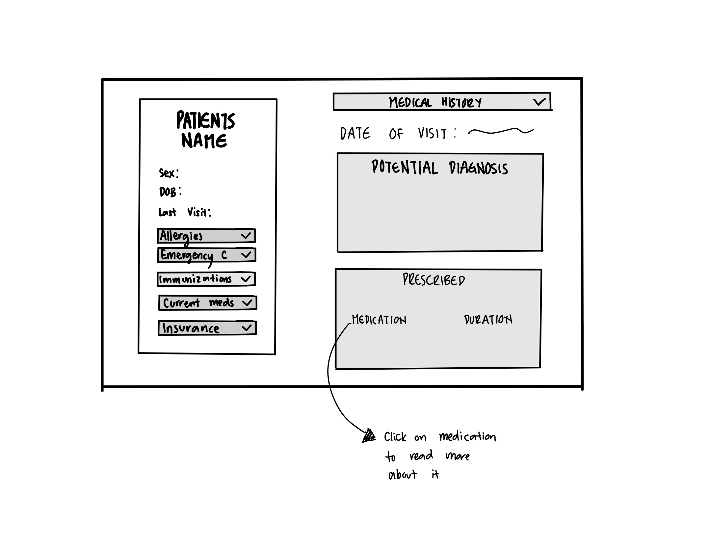
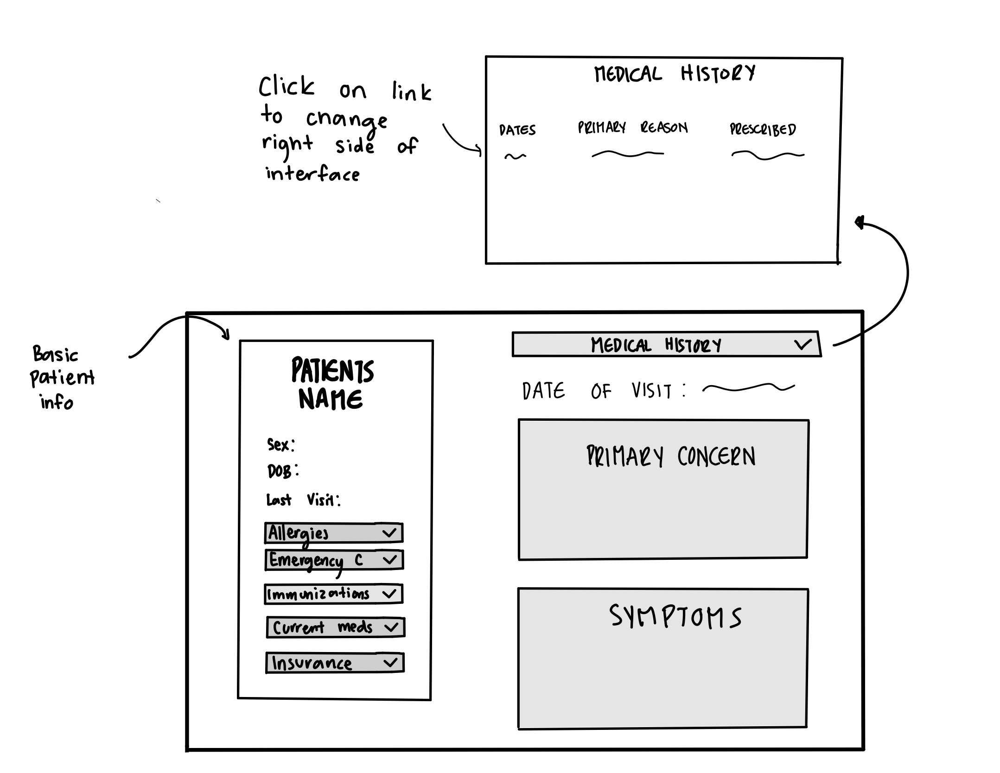
Screen where the patient can view their past intake forms. All sections are generated by the AI.
Sticky profile with scroll for right side to see primary concern, symptoms, potential diagnosis, and prescribed. Dropdown to change intake form being viewed.
This screen's UI and section titles were modified in the wireframe and hifi prototype while mantaining the same general layout to patients and doctors to view past intake forms.
For our final design, we leaned toward simpler designs, while still staying as accssible as possible. For example, we decided not to keep the exact nurse intake form pdf, rather preferring the information be presented in a more modular way. Another example of this is getting rid of the success message in the result of the intake form, as we felt that the screen itself was enough to indicate that the form was completed. However, the lack of a success message was brought up later by a user during a usability test
Wireframe Critique
Before moving onto the final mockup, we received valuable feedback on our design. This critique helped us identify both strengths and areas for improvement.
Positive Comments:
Suggestions for Improvement:
We chose to incorporate all of the suggestions from the critique. Each point addressed a point we had not previously considered—whether an aesthetic enhancement or an accessibility improvement. These refinements helped strengthen the usability and clarity of our interface.
Figma Prototype
Efficiency
Learnability
Memorability
In order to get a better idea of how our mockup performed, we performed a number of user tests. The task we had them undertake was creating a new intake form as if they were at a doctor's appointment.
The subtasks for this usability test are as follows:
User 1
Intake Screen
Confirm Intake Form
Overall, this user liked that the interface was very simple and took away a lot of the bulk that comes with filling out an intake form by isolating it to one "conversation" with an AI. They were confused by the colors and icons in the Patient Intake Form and also suggested to have areas for giving consent about privacy or agreeing to copay.
User 2
Intake Screen
Confirm Intake Form
Overall, this user liked the design and thought it looked official and clean. They thought the form was easy sufficiently easy to read and the options to type or speak was a good touch. But they did hope for an easier flow between the Intake Screen and the Confirm Intake Form Screen.
User 3
Intake Screen
Confirm Intake Form
Overall, this user liked the simplicity of the nurse intake form appreciating the option to type. However, the user suggested having some type of message or text indicating that page is to create a new form. The user also questioned if the navigation should be to this page after signing in.
Summary
Users made most errors in the Confirm Intake screen, confused about how to edit information. Some things we could add in the future are areas where the patient must sign for the doctor to obtain consent, as well as changing the editing of intake information to be isolated to the one part that is incorrect. We could also add a "get started" message or instructions on how the AI chat works after signing in.
I helped design a multi-screen interface for Paratus Health’s AI intake workflow, focusing on accessibility, clarity, and ease of use for both patients and doctors. My contributions focused on creating intuitive layouts that prioritized clarity, responsiveness, and usability across different user roles. I learned how to translate user feedback into actionable UI changes and iteratively refine design components based on efficiency, accessibility, and real-world constraints. This strengthened my ability to build scalable, user-centered interfaces—skills that directly apply to frontend software engineering.